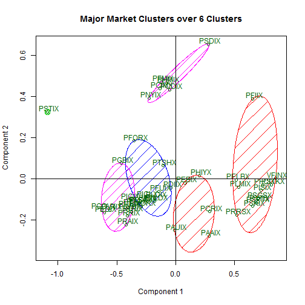

Static and Interactive Plots of Principal Coordinates on Systematic Investor Clusters
I have already written it, but I feel the need to once again compliment Systematic Investor for the very fine R financial work that he shares. The only thing that I can think of to improve what he has done is by using rCharts and d3.js to add interactivity to his plots. In this quick example, we'll cluster some Pimco mutual fund price data and plot the Principal Coordinates with the orignal static graph and then use a couple lines of rCharts to demonstrate a dimple.js and a nvd3 version of the scatterplot.
Gather Data as Usual
# work with http://systematicinvestor.wordpress.com/category/cluster/
# visualize with d3 using rCharts
###############################################################################
# Load Systematic Investor Toolbox (SIT)
# http://systematicinvestor.wordpress.com/systematic-investor-toolbox/
###############################################################################
setInternet2(TRUE)
con = gzcon(url('http://www.systematicportfolio.com/sit.gz', 'rb'))
source(con)
close(con)
#*****************************************************************
# Load historical data for Pimco Funds
#******************************************************************
library(quantmod)
tickers = c("PISIX","PSKIX","PSDIX","PSTKX","PCRIX",
"PFIIX","PHMIX","PFCIX","PCDIX","PTSHX",
"PFMIX","PLMIX","PSPTX","PCIMX","PSTIX",
"PNYIX","PLDTX","PLDIX","PTLDX","PAAIX",
"PXTIX","PHIYX","PSCSX","PAUIX","PTRIX",
"PGBIX","PFORX","PELBX","PDMIX","PMDRX",
"PEBIX","PDIIX","PRRSX","PMBIX","PTSAX",
"PTTRX","PIGLX","PRRIX","PFUIX","PIMIX",
"PIGIX","PRAIX","PLRIX","PGOVX","PEDIX","VFINX")
data <- new.env()
getSymbols(tickers, src = 'yahoo', from = '1900-01-01', env = data, auto.assign = T)
for(i in ls(data)) data[[i]] = adjustOHLC(data[[i]], use.Adjusted=T)
#save(file="pimco_data.Rdata",list=ls(envir=data),envir=data)
Copy/Paste Systematic Investor Calculations
I can't really add anything novel here, so I will basically copy and paste from some of Systematic Investor's posts and functions. If I incorrectly changed Principal Components to Principal Coordinates, please let me know, but the way I understand it cmdscale returns Principal Coordinates. Here is some additional discussion from Cross Validated.
bt.prep(data, align='remove.na')
# get the one period returns
ret <- data$prices / mlag(data$prices) - 1
# make first returns 0 instead of NA
ret[1,] <- 0
# create input assumptions
ia = create.historical.ia(ret, 252)
# create clusters
grp = cluster.group.kmeans.90(ia)
ngroups = max(grp)
# since cluster.group.kmeans.90 only returns the group
# get the components out manually with these bits of code
correlation = cor(ret, use='complete.obs', method = "spearman")
dissimilarity = 1 - (correlation)
distance = as.dist(dissimilarity)
# get principal coordinates
xy = cmdscale(distance)
fit = kmeans(xy, ngroups, iter.max=100, nstart=100)
Pretty Pictures
This, of course, is my favorite part. Drawing pictures adds a whole new level of understanding to data. We'll first plot the original static graphic using clusplot. There is certainly nothing wrong with this fine plot, but interactivity usually helps me understand and also gives me somthing to play with.
require(cluster)
# do a noninteractive plot of the coordinates
clusplot(xy, fit$cluster, color=TRUE, shade=TRUE, labels=3, lines=0, plotchar=F,
main = paste('Major Market Clusters over 6 Clusters'), sub='')
abline(v=0)
abline(h=0)

dimple.js is generally the first rCharts library that I use when I first start drawing plots, since it is extremely flexible. It does suffer just slightly though with a lack of pre-built interactive controls.
# now use rCharts to get some interactive d3 plots
pc.df <- data.frame(rownames(xy),grp,-xy)
colnames(pc.df) <- c("symbol","group","PC1","PC2")
# first a dimplejs version
dP <- dPlot(
PC2 ~ PC1,
groups = c("symbol","group"),
data = pc.df,
type = "bubble"
)
dP$xAxis( type = "addMeasureAxis" )
dP
nvd3 is a little slicker with its interactivity and styling. Unfortunately though it suffers from a little issue with its tooltips on scatterplots. The tooltips don't work until the magnify control is toggled on and then off.
# then a nvd3 version
nP <- nPlot(
PC2 ~ PC1,
group = "group",
data = pc.df,
type = "scatterChart")
nP$xAxis(tickFormat = "#!d3.format('.2%')!#")
nP$yAxis(tickFormat = "#!d3.format('.2%')!#")
nP$chart(
showDistX = TRUE,
showDistY = TRUE,
tooltipContent = "#!function(key, y, e, graph) {
return '<h3>Group: ' + key + '<br>' +
graph.point.symbol + '</a></h3>';
}!#")
nP
Thanks
Thanks Systematic Investor, Ramnath Vaidyanathan, Mike Bostock, and all the other fine people who have so generously shared their Javascript and R code.